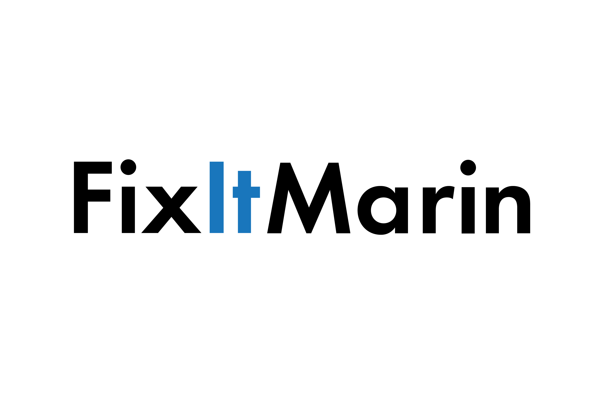
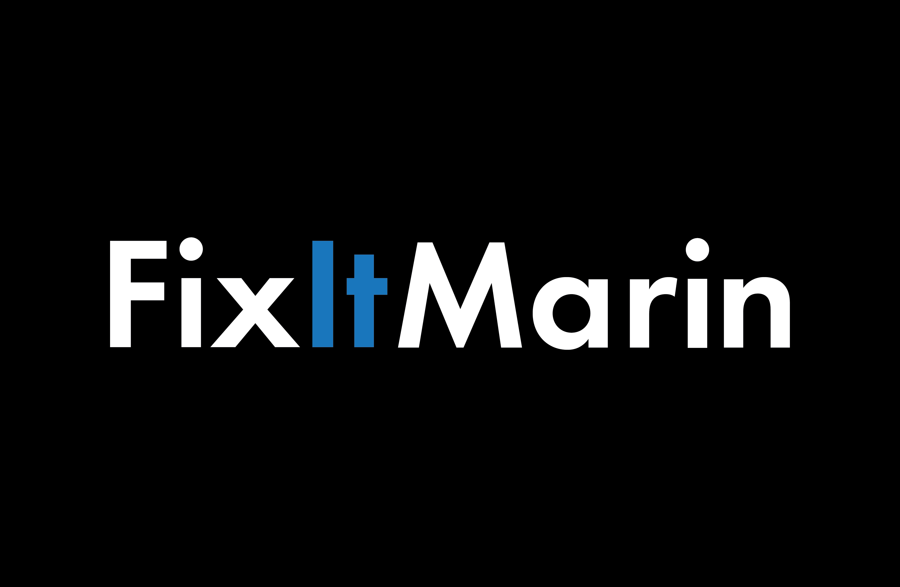
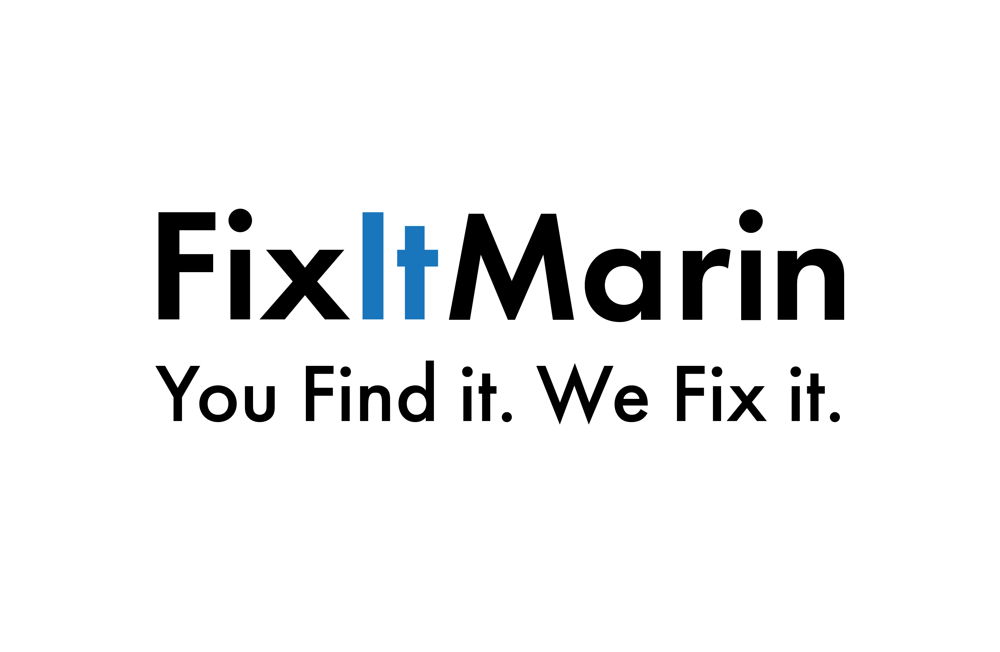
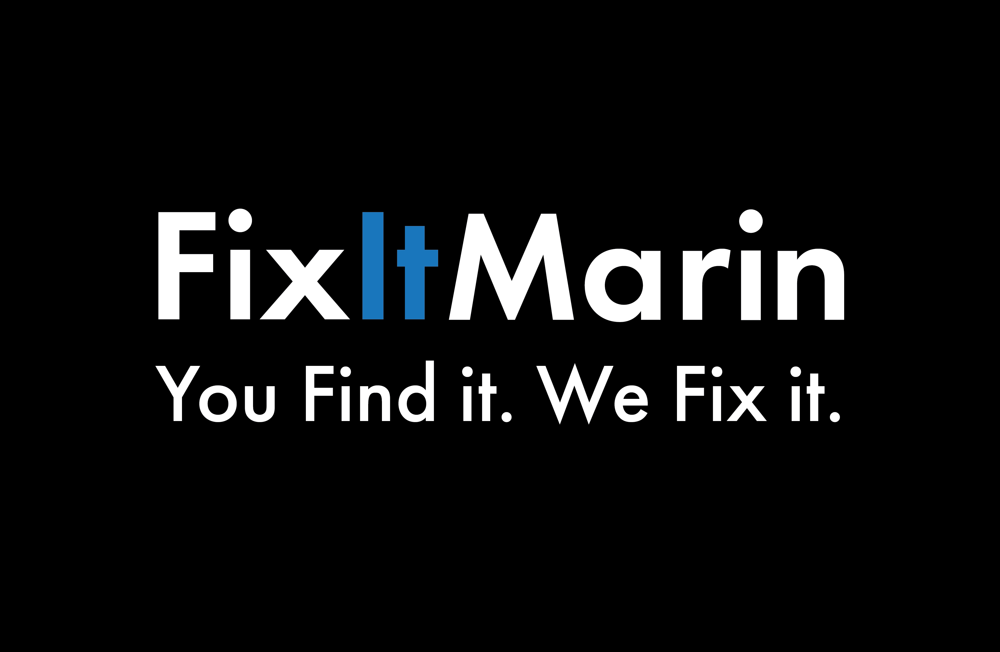
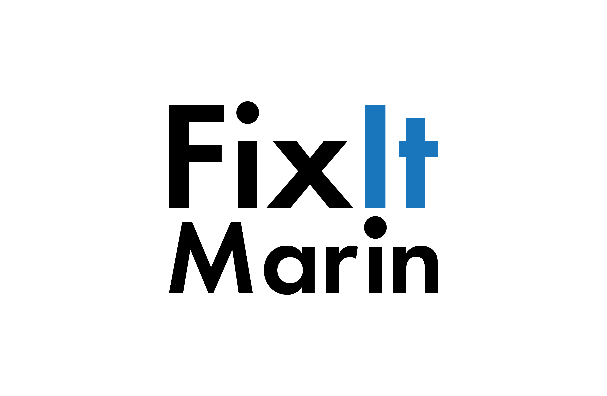
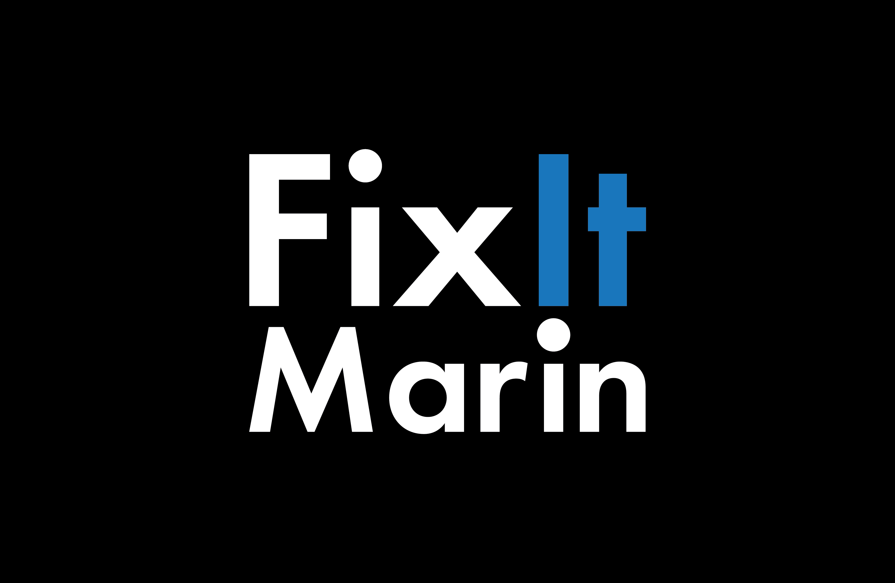
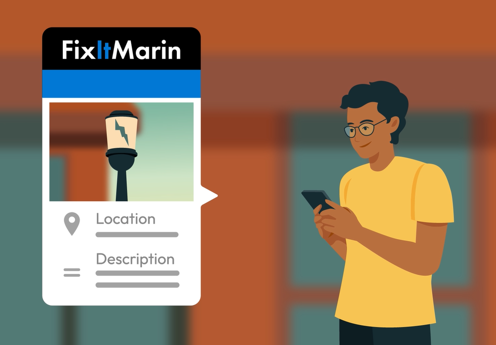
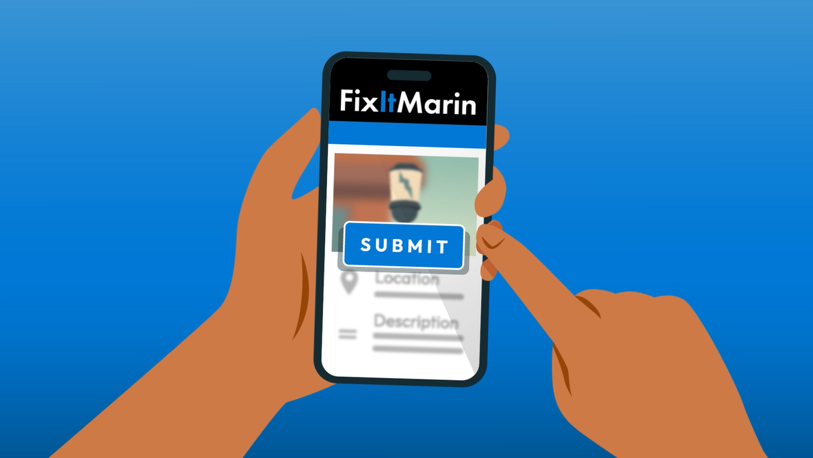
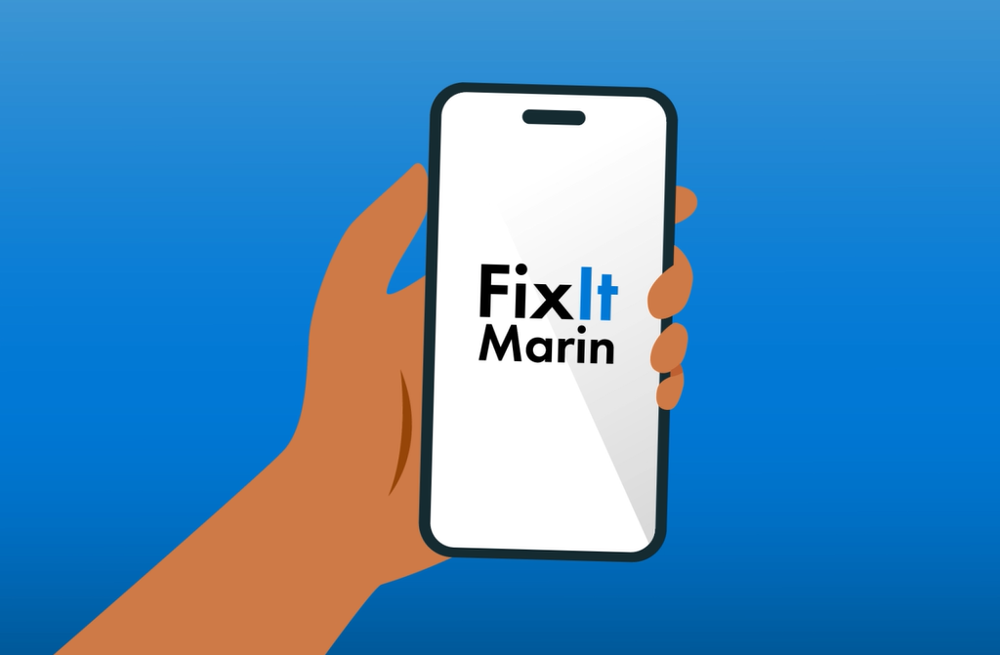

FixItMarin Digital Tool Kit
Access approved FixItMarin logos, graphics, social media assets, and brand guidance in one easy place.
Updated May 28, 2026
Purpose
Access approved FixItMarin logos, graphics, social media assets, and brand guidance in one easy place.
- Apply the FixItMarin name, logos, and graphics consistently across print, digital, and social media.
- Keep messaging and visual tone aligned with County standards.
- Make every FixItMarin communication feel connected and recognizable.
Logos
- If you do not find the logo you need, contact the Public Information Office.

Primary Logo Preferred
Use this primary logo on light backgrounds for most print, digital, and presentation materials.


Primary Logo Reversed
Use this logo on dark or colored backgrounds when the full color logo is not readable.


Primary Logo and Tagline
Use this version when there is enough space to include the tagline clearly and legibly.


Primary Logo and Tagline Reversed
Use this version with the tagline on dark or colored backgrounds for strong contrast.


Secondary Logo
Use this alternate logo when the primary logo does not fit the layout or format.


Secondary Logo Reversed
Use this alternate logo on dark or colored backgrounds when stronger contrast is needed.

Illustrations
Use these illustrations to support FixItMarin outreach across web, print, social media, and presentation materials.
Preview pending.
FixItMarin on Your Phone
Use this illustration to show that FixItMarin is available from a mobile device.

Submitting a FixItMarin Report
Use this illustration to show how residents can submit a location, description, and photo through FixItMarin.


Submit a Report on FixItMarin
Use this illustration to show a resident submitting a completed FixItMarin report from a mobile device.

Color palette
Black for the primary wordmark, with a blue accent on "It" to distinguish the FixItMarin name.
White is used for logo lockups on dark or colored backgrounds.
Consistent use of black, blue, and white keeps FixItMarin recognizable across the app, social media, and print materials.
Typography
- No typeface specification is published on the FixItMarin Digital Tool Kit page; treat the wordmark as locked logo artwork rather than resetting it in a separate typeface.
File formats
Use the supplied FixItMarin logo files as downloaded; do not recolor, distort, or recreate them.
- No vector master (EPS/AI) has been published for FixItMarin; only PNG exports are provided.
- Web & electronic
- PNG — All published FixItMarin logo lockups are PNG exports, suitable for web, digital, and Microsoft Office use. (RGB)
Printable materials
Print-ready PDF of poster for you to download.
- Flyer/Poster (PDF) — Use this poster in public spaces, counters, events, and community bulletin boards.
Social media
Use these graphics and sample captions to promote FixItMarin on County, department, and partner social media channels.

Facebook Post
Smartphone mockup displaying FixItMarin app promotional artwork.
English
See something that needs attention in your neighborhood?
Use FixItMarin to report non-emergency issues in unincorporated Marin County, including potholes, streetlight outages, fallen branches, and more.
Submit a report, add a photo and location, and track updates as County crews respond.
Get started: FixItMarin.com
FixItMarin is for non-emergencies only. For emergencies, call 911.
#FixItMarin
Spanish
¿Has visto algo que requiera atención en tu barrio?
Utiliza FixItMarin para informar de situaciones que no sean de emergencia en las zonas no incorporadas del condado de Marin, como baches, averías en el alumbrado público, ramas caídas y otras incidencias.
Envía un informe, añade una foto y la ubicación, y sigue las actualizaciones a medida que los equipos del condado responden.
Empieza aquí: FixItMarin.com
FixItMarin es solo para situaciones que no sean de emergencia. Para emergencias, llama al 911.
#FixItMarin